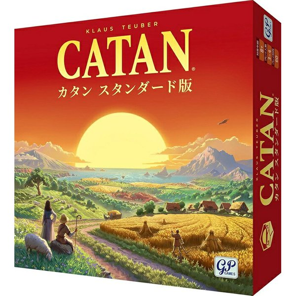
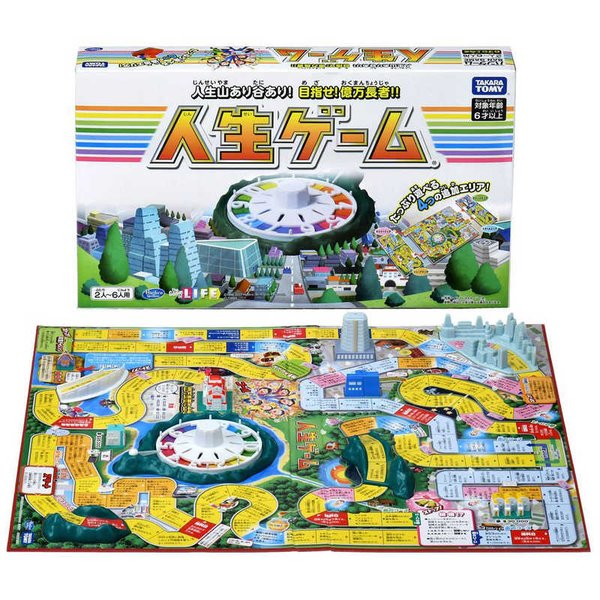
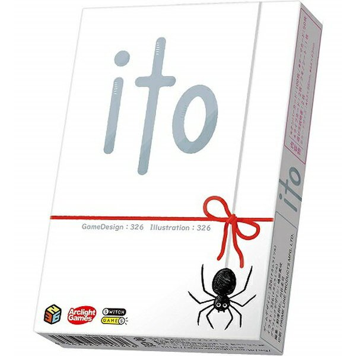
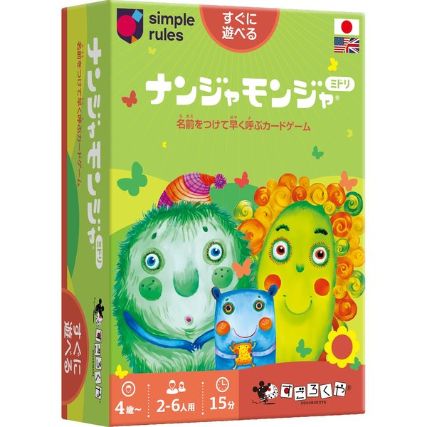
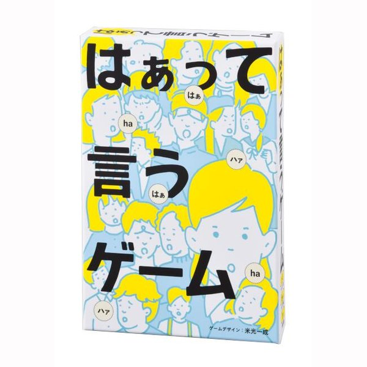
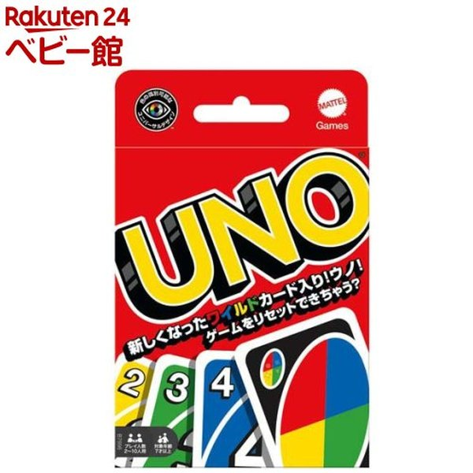
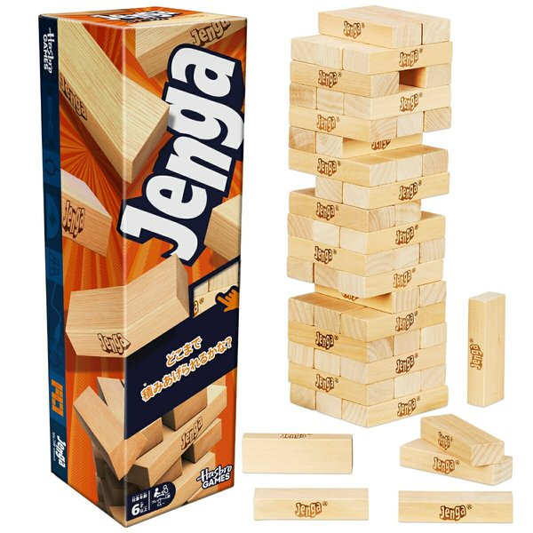
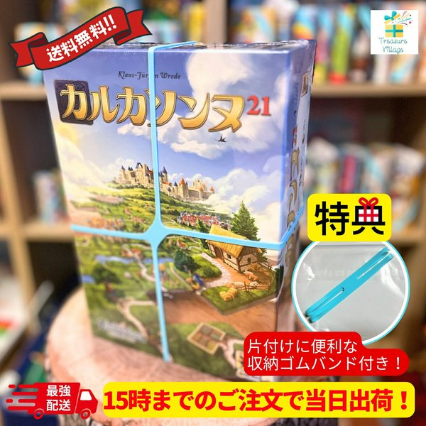
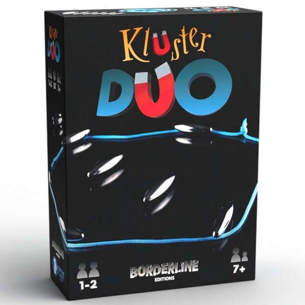
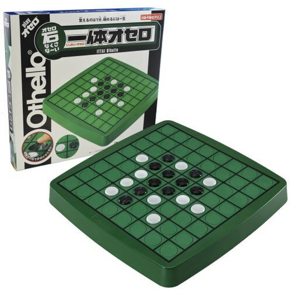

【2026年・年末年始】家族と友人で盛り上がるボードゲーム・カードゲーム10選｜カタン・人生ゲーム・ito・ナンジャモンジャ・はぁって言うゲーム・UNO・ジェンガ・カルカソンヌを実売価格で比較
年末年始に人が集まると、スマホを置いて全員で遊べるものが1つあるだけで、その場の空気が変わります。ルールが難しくないものを選ぶのがコツです。
選ぶ軸は3つです。「まず人数」。2〜4人向けのじっくり型と、6人以上でも遊べるパーティー型では役割が違います。「次に1回の長さ」。10〜15分で終わるゲームは、食事の前後や子どもが飽きる前に切り上げられます。「最後に会話が生まれるか」。カタンのような交渉型は会話が増え、itoのような協力型は初対面でも盛り上がります。なお、レビュー件数が少ない商品は記事内に実数を明記しています。
本記事では、楽天市場で人気・高評価のボードゲーム・カードゲーム10選を、実売価格とレビュー評価つきで写真付き紹介します。
| 順位 | 商品名 | ブランド | 最大の特徴・おすすめ理由 | 総合評価 |
|---|---|---|---|---|
| BEST 1 | カタン スタンダード 2026年版 | ジーピー（GP） | 何度やっても盤面が変わる | 5.00 |
| BEST 2 | 人生ゲーム | タカラトミー | ルールを知らなくても遊べる | 4.66 |
| BEST 3 | ito（イト）カードゲーム | アークライト | 会話が自然に弾む | 4.83 |
| BEST 4 | ナンジャモンジャ・ミドリ | すごろくや | 4歳から遊べる | 4.69 |
| BEST 5 | はぁって言うゲーム | 幻冬舎 | 「はぁ」だけで盛り上がる | 4.61 |
| BEST 6 | ウノ（UNO）B7696 | マテル | ルールが簡単 | 4.35 |
| BEST 7 | 公式ジェンガ（2025） | ハズブロ | 木の手触りとハラハラ感 | 4.90 |
| BEST 8 | カルカソンヌ21 | メビウスゲームズ | タイルを置くだけの簡単ルール | 4.78 |
| BEST 9 | Kluster DUO クラスター デュオ | BORDERLINE | ルールが一瞬で分かる | 4.57 |
| BEST 10 | 一体オセロ | メガハウス | 石をなくす心配がない | 4.84 |
カタン スタンダード 2026年版

カタンは、無人島を開拓して道路と街を築き、資源を集めて10点を目指す定番ボードゲームです。サイコロの出目で資源が入るため、序盤に差がついても終盤で逆転でき、最後まで集中が切れません。交渉で資源を交換できるので、家族や友人との会話が自然に増えます。2026年版のスタンダードで、3〜4人用、8歳以上から遊べます。楽天市場での実売価格は約3,980円（2026年11月時点）。
- 何度やっても盤面が変わる
- 交渉と駆け引きが楽しい
- 2026年版のスタンダード
- レビューは4件と少なく、初めてだとルール説明に時間がかかる
人生ゲーム

人生ゲームは、すごろくで人生を疑似体験するタカラトミーの定番ゲームです。ルールを覚えていなくても、止まったマスの指示に従うだけで遊べるので、久しぶりに集まった家族や親戚の席でもすぐ始められます。職業や結婚、家の購入など、展開によって金額が大きく動くので、大人も本気で盛り上がります。年末年始の定番として1箱あると安心です。楽天市場での実売価格は約3,980円（2026年11月時点）。
- ルールを知らなくても遊べる
- 世代を問わず盛り上がる
- 年末年始の定番
- プレイ時間が長めなので、始める時間に余裕を持つ
ito（イト）カードゲーム

itoは、1〜100の数字カードを数字を見せずに配り、お題に対する「価値観」の順番で並べる協力ゲームです。数字を口に出せないので、「大きいと思う」「小さいと思う」を言葉で伝え合うことになり、初対面の人とも会話が弾みます。全員で成功を目指す協力型なので、勝ち負けで気まずくなりにくいのも家族向け。3〜8人で短時間に遊べます。楽天市場での実売価格は約1,940円（2026年11月時点）。
- 会話が自然に弾む
- 数字を言わない協力ゲーム
- 少人数でも大人数でも楽しめる
- レビューは36件と少なく、お題の解釈で盛り上がりすぎると長引く
ナンジャモンジャ・ミドリ

ナンジャモンジャは、カードに描かれた見たことのないモンスターに名前をつけ、同じモンスターが再び出たときに誰よりも早くその名前を叫ぶゲームです。名前は自分で決めるので、一度決めた名前を忘れると自分が損をする、という可笑しさがあります。4歳から遊べるルールで、子どもと大人が同じ条件で勝負できます。2〜6人、15分ほどで終わります。楽天市場での実売価格は約1,549円（2026年11月時点）。
- 4歳から遊べる
- 名前を考えるのが楽しい
- 15分ほどで終わる
- 大人数だと声が重なって判定が紛れる
はぁって言うゲーム

はぁって言うゲームは、「はぁ」の一言を指定された感情で言い分け、どの感情だったかを当てるコミュニケーションゲームです。演技力より度胸で、大げさにやるほうが当てられやすいという逆転があり、場が一気に温まります。カードを配って数分で1ラウンドが終わるので、食事の前後のすきま時間にも使えます。2〜8人向けのパーティーゲームです。楽天市場での実売価格は約1,760円（2026年11月時点）。
- 「はぁ」だけで盛り上がる
- 1ラウンドが数分で終わる
- 食事のすきま時間にも
- 人前で演じるのが苦手な人には少し負担
ウノ（UNO）B7696

UNOは、手札の数字か色を合わせて出し、最後に1枚残ったら「UNO」と宣言するカードゲームです。ルールが簡単で、子どもから大人まで同じ土俵で遊べます。手頃な価格で、旅行や帰省の荷物にも入れやすい。今回のセットはマテルの定番B7696で、2〜10人まで対応します。楽天市場での実売価格は約1,109円（2026年11月時点）。
- ルールが簡単
- 旅行や帰省に持っていける
- 手頃な価格
- レビューは20件と少なく、大人数だと自分の番まで待つ時間が長い
公式ジェンガ（2025）

ジェンガは、積み上がった木製ブロックを1本ずつ抜いて上に積み直すバランスゲームです。崩れる瞬間のハラハラ感が面白く、子どもも大人も手に汗をかきます。2025年版はWebアプリでいろいろな遊び方が見られるようになり、1人でも練習できます。6歳以上、1人から複数人まで遊べるため、家族の人数が変わっても使えます。楽天市場での実売価格は約2,378円（2026年11月時点）。
- 木の手触りとハラハラ感
- Webアプリで遊び方を確認できる
- 1人でも練習できる
- レビューは20件と少なく、ブロックを1本なくすと成立しにくい
カルカソンヌ21

カルカソンヌ21は、引いたタイルを置いて街と道をつなげていくタイル配置ゲームです。ルールは「タイルを引いて、つながるように置く」だけで、初めてでも1分で理解できます。毎回タイルの出方で地形が変わるので、同じメンバーで何度遊んでも飽きません。2〜5人用で、収納用のゴムバンドが付属します。楽天市場での実売価格は約4,380円（2026年11月時点）。
- タイルを置くだけの簡単ルール
- 毎回地形が変わる
- 収納ゴムバンド付き
- レビューは9件と少なく、4,380円とやや高め
Kluster DUO クラスター デュオ

Kluster DUOは、磁石の石を落とさないように場に置いていくアクションゲームです。石同士が反発して勝手に動くので、置く場所と向きを見極める集中力が要ります。1〜4人用で、ルールは数秒で説明できるほど簡単。片付けも袋に入れるだけです。テレビ番組で紹介されたことから、パーティーグッズとしても人気があります。楽天市場での実売価格は約3,780円（2026年11月時点）。
- ルールが一瞬で分かる
- 磁石の反発でハラハラする
- 1人から4人まで遊べる
- 磁石を使うので、小さい子どもの手が届く場所では注意する
一体オセロ

一体オセロは、石が盤に内蔵されていて、ひっくり返すだけで盤面が変わるオセロです。石をなくす心配がなく、遊び終わったら裏返して閉じるだけで片付けが終わります。6歳以上から遊べる定番のルールで、初めての子どもにも教えやすい。盤面が一体型なので、持ち運びより家で遊ぶ用途に向いています。楽天市場での実売価格は約3,049円（2026年11月時点）。
- 石をなくす心配がない
- 片付けが一瞬で終わる
- 6歳から遊べる定番ルール
- レビューは38件と少なく、盤面が一体型で持ち運びには向かない
この記事の商品を買う前に、まずは無料で得する選択肢をチェック。どれも登録・利用は0円で、無料期間中に解約すれば料金はかかりません。読みたい雑誌がある人、ポイントを貯めたい人、アンケートなら気軽という人、それぞれに合うものを選べます。
初回31日無料・無料期間中に解約すれば0円 → 楽天ポイントモール｜登録無料で毎日ポイ活
買い物なしでもポイントが貯まる無料サービス → 楽天インサイト｜アンケートに答えてポイント
登録無料・すきま時間のアンケートで貯まる → 楽天カード｜年会費永年無料
新規発行・年会費ずっと0円 →
4つのサービスの違いと使い分けは「出費0円で得する！買わずにポイントが貯まる無料サービス厳選4選」でまとめています。
💡 まとめ：ボードゲーム・カードゲーム10選の選び方
ボードゲームは、じっくり型とパーティー型を1つずつ持つと、集まる人数と時間に合わせて選べます。じっくり遊ぶならカタンとカルカソンヌ21、家族で長く遊ぶなら人生ゲームとオセロ。短時間で盛り上がるのは、ナンジャモンジャ・ミドリ、はぁって言うゲーム、ito、Kluster DUOです。UNOとジェンガは、ルールを覚えていない人が混ざってもすぐ始められる保険として1つあると安心。年末年始は、大人数で遊べるカードゲームを多めに、2〜4人でじっくり遊ぶボードゲームを1〜2本、という組み合わせが失敗しにくいです。
楽天市場では「5と0のつく日」や「お買い物マラソン」などのキャンペーンに合わせて購入すると、ポイント還元が最大化してお得に手に入ります。ぜひチェックしてみてくださいね。